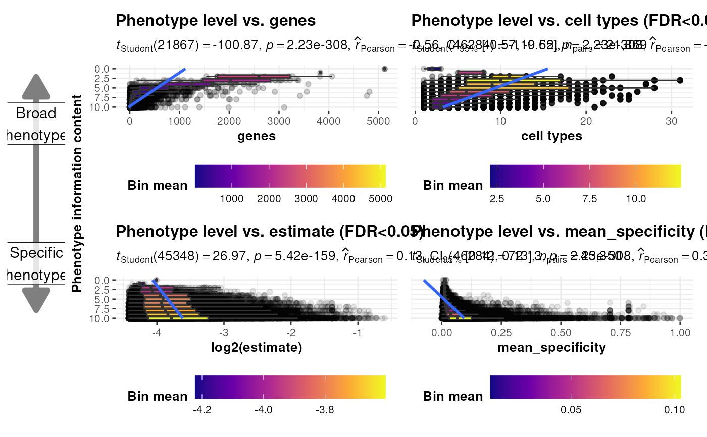

Generate plots comparing the ontology level of each HPO phenotype and several other metrics.
plot_ontology_levels(
results = load_example_results(),
p2g = HPOExplorer::load_phenotype_to_genes(),
ctd_list = load_example_ctd(file = paste0("ctd_", unique(results$ctd), ".rds"),
multi_dataset = TRUE),
x_vars = c("genes", "cell types", "estimate", "mean_specificity"),
log_vars = x_vars %in% c("estimate", "statistic", "F", "ges", "effect"),
sig_vars = x_vars %in% c("estimate", "statistic", "F", "ges", "effect", "cell types",
"mean_specificity"),
group_vars = c("hpo_id", "ontLvl", "ctd"),
q_threshold = 0.05,
min_value = NULL,
label.x.npc = 0.05,
label.y.npc = 0.5,
n.breaks = 4,
notch = FALSE,
nrow = 2,
add_arrow = TRUE,
show_plot = TRUE,
save_path = NULL,
height = 7,
width = length(x_vars) * 5.75,
smooth.line.args = list(method = "loess", se = FALSE),
return_data = TRUE
)The cell type-phenotype enrichment results generated by gen_results and merged together with merge_results
Phenotype to gene data.
A named list of CellTypeDataset objects each created with generate_celltype_data.
Variables to plot on the x-axis of each subplot.
Logical vector indicating which variables to log-transform.
Logical vector indicating which variables to only plot for significant results.
Compute the mean value for each x_vars
grouped by the group_vars.
This can be less accurate for some metrics but helps to drastically
reduce computational load.
The q value threshold to subset the results by.
Minimum value for the specificity metric.
can be numeric or character
vector of the same length as the number of groups and/or panels. If too
short they will be recycled.
If numeric, value should
be between 0 and 1. Coordinates to be used for positioning the label,
expressed in "normalized parent coordinates".
If character,
allowed values include: i) one of c('right', 'left', 'center', 'centre',
'middle') for x-axis; ii) and one of c( 'bottom', 'top', 'center', 'centre',
'middle') for y-axis.
If too short they will be recycled.
Passed to scale_fill_viridis_c.
If FALSE (default) make a standard box plot. If
TRUE, make a notched box plot. Notches are used to compare groups;
if the notches of two boxes do not overlap, this suggests that the medians
are significantly different.
Number of facet rows for the plot.
Add arrows indicating whether phenotypes are more broader or more specific across ontology levels.
Print the plot to the console.
Save the plot to a file.
Set to NULL to not save the plot.
Height of the saved plot.
Width of the saved plot.
A list of additional aesthetic arguments to be passed
to geom_smooth geom used to display the regression line.
Return the full long data used in the plots.
A named list containing the data and the plot.
out <- plot_ontology_levels()
#> Loading required namespace: gginnards
#> Getting absolute ontology level for 19,025 IDs.
#> Reading cached RDS file: phenotype_to_genes.txt
#> + Version: v2024-12-12
#> Adding genes and disease IDs.
#> Loading ctd_DescartesHuman.rds
#> Loading ctd_HumanCellLandscape.rds
#> Reading cached RDS file: phenotype_to_genes.txt
#> + Version: v2024-12-12
#> Filtering q-values < 0.05 : 'cell types'
#> Filtering q-values < 0.05 : 'estimate'
#> log10 transforming x-axis: 'estimate'
#> Warning: NaNs produced
#> Filtering q-values < 0.05 : 'mean_specificity'
#> `geom_smooth()` using formula = 'y ~ x'
#> `geom_smooth()` using formula = 'y ~ x'
#> `geom_smooth()` using formula = 'y ~ x'
#> `geom_smooth()` using formula = 'y ~ x'
